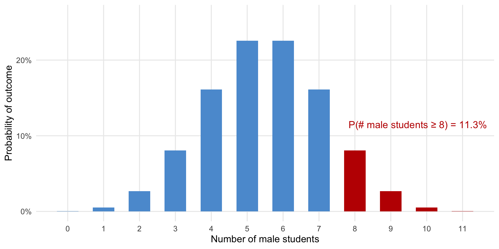
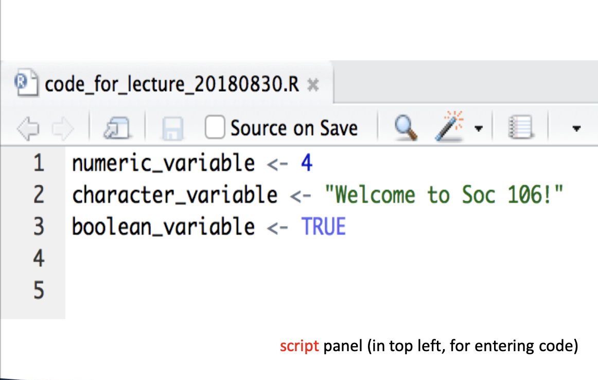
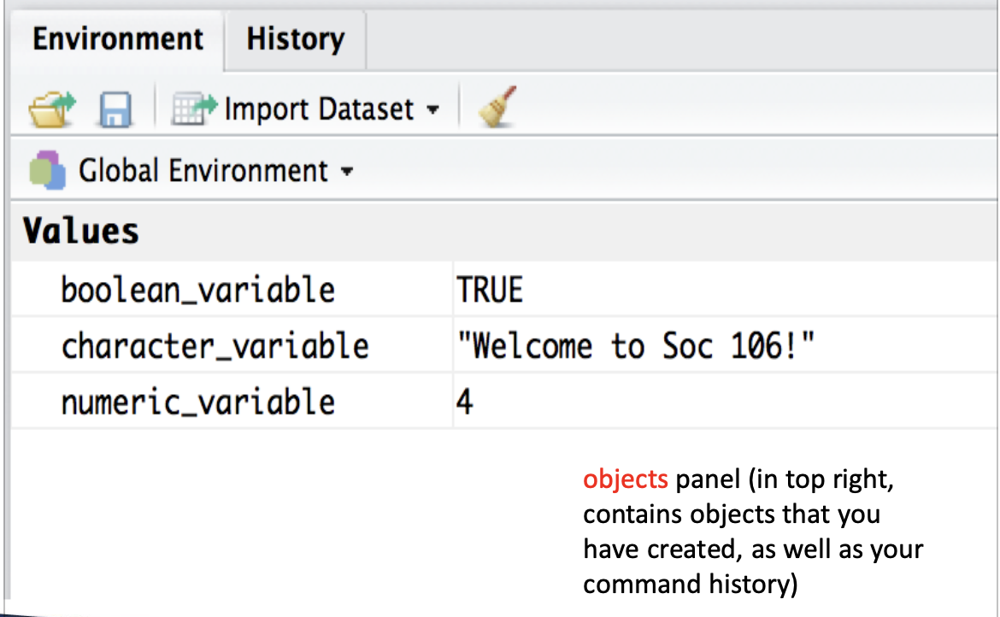

Exact binomial test
data: c(8, 3)
number of successes = 8, number of trials = 11, p-value = 0.1133
alternative hypothesis: true probability of success is greater than 0.5
95 percent confidence interval:
0.4356258 1.0000000
sample estimates:
probability of success
0.7272727 Week 2
Sociology 106: Quantitative Sociological Methods
01/27/2026
Agenda
Introductions
Welcome, and a few remarks about the course
Discussion of each of today’s learning goals:
- Have a sense of what the course is, what it is not, and what we’ll cover this semester
- Understand structure and requirements of the course
- Download and install
Rand Positron
Install R and Positron – must be done by class next week
Introductions
Kasey Zapatka, Postdoctoral Researcher
- PhD, Sociology, CUNY Graduate Center
- Urban inequality with a focus on housing, affordability, and neighborhood change
- Dissertation: how gentrification influences housing affordability and traced housing affordability over life course
- R/python, Machine Learning, MLM, causal inference, spatial econometrics
Introductions
Teaching
- Computational Social Science - course covering machine learning, text analysis, and causal inference
Current Research
- Developing a longitudinal database of evictions
- Evaluating impact of Emergency Rental Assistance and tenant protections on evictions during COVID-19 pandemic
Now your turn
- Name
- Year
- Experience with
R(no right answer) - Mac or Windows user? (there’s a right answer)
- Why are you taking this course?
- What are you most looking forward to in this course?
Sociology 106 is…
…an intermediate undergraduate social science research methods course emphasizes the motivation, computation, and interpretation of statistical tests.
Course Content
- Statistical tests for one or two continuous or categorical variables
- Interpretation of linear and logistic regression
- Introduction to machine learning framework in the last week
- Data management and analysis using
Rstatistical programming language
Skills Developed
Students will gain practical experience in R for conducting statistical analyses and managing data.
Sociology 106 is not…
…about math. Statistics is about adjudicating between rival explanations of phenomena about a population, using data from that population.
This course will be taught with more of a focus on the math / statistical theory or with more of a focus on sociological applications
We will be more applied, still with some math (and some equations)
…about the “one true way to answer sociological questions” (where quals at?).
After Sociology 106, you will:
- Understand the logic of statistical inference
- Identify appropriate statistical tests for different types of data
- Visualize data and produce descriptive statistics and simple statistical tests using
R - Interpret and communicate statistical results and discuss their relevance in the context of a particular research question
So, what is a statistical question?
In past semesters, has Sociology 106 been more appealing to male or female students?
- One possibility: gender doesn’t make a difference!
- Another possibility: male students are more likely to have taken Sociology 106 in the past
Could look at descriptive statistics
Some descriptive statistics…(from a previous semester!)

The probability model

One example:
In past semesters, has Sociology 106 been more appealing to male or female students?
One possibility: gender doesn’t make a difference!
- Null hypothesis: P(student is male) = 50%
Another possibility: male students are more likely to major in Statistics
- Alternative hypothesis: P(student is male) > 50%
A statistical test
The same test, but in R
By the end of this course…
You will be able to test:
- Theories involving one categorical or continuous variable.
- Ex: gender is often measured as a categorical variable (male / female / other)
- Ex: income is often measured as a continuous variable (the number of dollars one earns is a real number)
- Theories involving how one (or more) binary or continuous variable affects another binary or continuous variable.
Questions?
Course Expectations
- Active learning - Lecture is for you so interrupt to ask questions if you have them
- Safe and productive learning space for researchers using these methods and supporting each other
- Expose you to a lot of coding and technical things but we can do it together
- We’re only learning the basics and that’s all I expect from you
- Coding in
Rcan be intimidating, but promise it’s worth learning how use - Positron is cutting edge IDE (most of grad students don’t use), but it’s the future of social science research
Open week
Right now I have an open week at the end and I want to fill it with something that is useful to you all. Material will likely not be included on final exam.
Some options:
- brief intro to machine learning
- survey of more advanced methods (e.g., fixed effects, MLM, spatial regression, Poisson/Negative Binomial, etc.)
- open to class suggestions of what would be useful to you all
Let me know and we can take a vote in week 3
Course Navigation
- bCourse is our bible
- home
- announcements
- assignments
- pages
- GitHub course repo
- slides (each week )
- syllabus (pdf on bCourse)
Required Course Readings
David Lane’s Online Statistics (http://onlinestatbook.com/Online_Statistics_Education.pdf).
Hadley Wickham’s R for Data Science 2nd Edition (https://r4ds.hadley.nz), which is also free online.
We’ll read two journal articles to see how social scientists use regression analysis in practice.
Thompson, M.S., & Keith, V. M. (2001). The Blacker the Berry: Gender, Skin Tone, Self-Esteem, and Self-Efficacy. Gender & Society, 15(3), 336-357. (https://doi.org/10.1177/089124301015003002)
Freeman, L., & Braconi, F. (2004). Gentrification and Displacement New York City in the 1990s. Journal of the American Planning Association, 70(1), 39–52. (https://doi.org/10.1080/01944360408976337)
Required Course Materials
Access to a laptop where you can download:
R(http://cran.rstudio.com), an open-source programming languagePositron (https://positron.posit.co/download.html), a free program that makes working in
Rmuch easier and is at the cutting edge of data science right now.
We’ll start installation of R and Positron at the end of class–this must be done by class next week
Course Elements
- Attendance and participation (10%)
- Weekly homework assignments (30%)
- Research paper (40%)
- Final exam (20%)
Class Format
First half of class (give or take) will be a lecture where I go over new statistical concepts and show you how to implement these statistical concepts in R
Second half of class, either you will have time:
- to start hw assignments that practice implementing these concepts in
R - we’ll have extra time for questions/followups
- we’ll discuss the research papers a bit more in-depth
Typical Weekly Assignment
- Anywhere from 3-10 problems with brief analysis and write-up in
Rand quarto - Be sure to show your work – writing out conclusions and interpreting results as necessary
- With couple of exceptions, you’ll work with your own dataset to apply methods introduced in lecture
- Ideally the same dataset from week to week (use the same dataset for your research paper)
- For the first assignment, I will provide a dataset on bCourses
- Think carefully about the method, the types of questions it can answer, and the types of variables that can be used in the method before choosing variables from your dataset
- Write up using quarto (.qmd file) template provided on bCourses to submit to bCourse
Research Paper
You will develop and present a research question of your choice, address it using statistical techniques from the course that you apply to data in R, and write a paper summarizing your findings
You can (and should) use your weekly assignments to work on your research question
Several milestones throughout the semester will help you progress towards the final paper
- Paper proposal (5%)
- Annotated bibliography (5%)
- Revised paper proposal with outline (5%)
- In-class presentation (5%) – 7-10 mins
- Final paper (20%)
Keys to Success
Material is cumulative, so it is critical to keep up
- Please ask questions during lecture!
- If you find yourself falling behind, seek help immediately from me during office hours
Learning statistics requires thinking through how to solve problems
- This is what the weekly assignments are for; you should not expect to fully understand the material until after you have completed the assignment
- Feel free to work on assignments in groups, though what you turn in must be your own work.
Keys to Success
Learning statistics is like learning a language
- The material in this course can be challenging / counterintuitive if you haven’t seen it before
- It is important not to be intimidated by new terms or the use of letters to represent quantities or variables
- Review your algebra skills if necessary
Lecture slides will be made available, but are not a substitute for careful note taking
Office Hours
I can help in office hours with questions about concepts from lecture or about coding in R
- Tuesdays, right before 11:30 AM-1:00 PM, TBA
- Tuesdays, right after class, until 4:30 PM, TBA
- If you can’t make either, e-mail me and we’ll find a time
Outside of office hours, your best resources are your fellow classmates!
- If something is really unclear to you and others, e-mail me and we can go over it in next week’s lecture
Online and Generative AI Policy
- PLEASE USE THEM!–AI tools (e.g., ChatGPT), Google, and online resources (e.g., StackOverflow or StackExchange)
- DO use these tools to better understand concepts, debug code, suggest libraries or packages, or offer sample code to guide learning.
- DO NOT copy or paraphrase AI-generated content in any assignment, as this counts as plagiarism
- The goal is to use them to support your learning and problem-solving, not to replace it.
If you are going to spend the time taking this course, you should learn as much as you can.
Questions?
Getting started with R and Positron
Download and install R:1
https://cran.rstudio.com
Download and install Positron2
https://positron.posit.co/download.html
Housekeeping
Office hours this week
- Tuesdays, right before 11:30 AM-1:00 PM, TBA
- Tuesdays, right after class, until 4:30 PM, TBA
- If you can’t make either, e-mail me and we’ll find a time
HW #1: due Thursday, February 5, 11:59 PM
Agenda
Exploring R and Positron
R and positron are very powerful
- Today may seem like a lot if you haven’t had much programming experience
- Please stop me if you are not sure you understand—you are probably not the only one!
- Helpful if you can follow along in Positron
Goal of today’s lecture:
- Basics of using R (through Positron)
- How to load data
- How to complete homework
Positron
- Open sourced Integrated Development Environment (IDE)
- Developed by Posit and descendent of R-studio
- Specifically designed to use R and Python interchangeably
- Tons of custom extensions - e.g., air, gitlens, quarto, docker
- Can be used for data science, web apps, websites, books, etc.
Check out Andres Heiss’ blog for more fun things
Positron
- Script panel
- Console panel
- Objects panel
- Plot panel

Script Panel
Console Panel

Object Panel
Positron
Let’s explore Positron live:
- File explorer
- Terminal (command line)
- Interpreter and Folder
New fileOpen- Viewer
Writing with script.R
Best practice to write all code in a script file
- Reproducible code
- Documents exactly what you have done
- Allows you to easily correct mistakes
Two typs of files we’ll work with
- R file (.R) - only accepts R code
- Quarto file (.qmd) - allows for R/Python and text
Writing with script.R
Use a hashtag (#) at the start of lines in your script to tell R not to run that line
- Useful for making comments about what your code is doing:
- Helps you remember what you did
- Helps others (like me, reading your homework) see what you were doing
Writing with script.R
Running code:
- Windows: highlight the entire line, and hit
Ctrl + r - Mac: cursor on line, hit
command + return
Variable assignment in script.R
R is an object-oriented programming language, meaning you can create new objects from any type of value, store it R’s memory, and call it when necessary
- Define variables using the assignment operator:
<- - Give variables meaningful names when assigning
Common values for variables
Values can be:
- numeric (3, 4.5,
pi) - character (“Welcome!”, “foo”)
- boolean (true / false)
Variable assignment in script.R
Variable names must be unique
- Reusing an old name will overwrite the definition of the variable
```{r echo=TRUE} # First assignment my_variable <- 10 my_variable
Overwriting the variable
my_variable <- 20 my_variable
## Types of variables: numeric
**Numeric variables** can store any real numbers and you can perform standard mathematical operations on numeric variables:
```{r echo=TRUE}
a <- 10
b <- 3
a + b
a - b
a * b
a / bTypes of variables: character
Character variables can store any text, and are always contained within quotation marks.
```{r echo=TRUE} first_name <- “John” last_name <- “Doe”
Combine character strings
paste(first_name, last_name)
## Types of variables: boolean
**Boolean variables** are stored as `TRUE` or `FALSE`, which R stores as 1 or 0
So, in essence, R stores boolean variables as numeric variables
```{r echo=TRUE}
is_enrolled <- TRUE
has_laptop <- FALSE
# R treats TRUE as 1 and FALSE as 0
is_enrolled + has_laptop
sum(is_enrolled, has_laptop)Converting variable types
Under certain circumstances, we can force R to change the type that it classifies a vector
- Can always convert numeric → character using the
as.characterfunction - Can convert character → numeric, if the original character vector consists of numbers, using the
as.numericfunction- If it contains characters, then WE PROB DON’T WANT TO!
Converting variable types
Here’s what it looks like R:
```{r echo=TRUE} # Numeric to character num_var <- 42 char_var <- as.character(num_var) char_var
Character to numeric
text_num <- “123” converted_num <- as.numeric(text_num) converted_num
## Logical operators
- Use logical operators to compare two variables or objects
- Useful for manipulating data
| Operator | Meaning |
|----------|--------------------------|
| `==` | Equal to |
| `!=` | Not equal to |
| `<` | Less than |
| `>` | Greater than |
| `<=` | Less than or equal to |
| `>=` | Greater than or equal to |
## Logical operators
Here's what that might look like in R:
```{r echo=TRUE}
x <- 10
y <- 5
x == y
x != y
x > y
x < y
x >= 10Questions?
Data structures
Data structures are simply collections of the data objects we have been working with:
- Numeric
- Character
- Boolean variables
While there are many types of data structures in R, we will focus on two for our purposes: the vector and the dataframe
Vectors
Vectors are ordered collections of the same type of objects
- Ordered: position matters
- Same type: e.g., can’t mix numeric and character
We create vectors using the c() operator:
```{r echo=TRUE} # Numeric vector ages <- c(22, 25, 19, 30)
Character vector
names <- c(“Alice”, “Bob”, “Charlie”, “Diana”)
The `c()` operator works on already-existing vectors as well as variables (if of same type)
## Vectors {.smaller}
We can call individual elements within vectors two ways:
- using bracket notation: `vector[i]`
- using the [Tidyverse:](https://tidyverse.org) `nth()`
::: panel-tabset
## Base R
Use bracket at end of vector name with index
The first element of a vector is indexed as 1.
```{r echo=TRUE}
ages <- c(22, 25, 19, 30)
# Get the first element
ages[1]
# Get the third element
ages[3]
# Get multiple elements
ages[c(1, 3)]Tidyverse
Use nth() function to do the same thing more intuitively
Still need Base R to do some things
```{r echo=TRUE}
load the Tidyverse library
library(tidyverse)
Get the first element
nth(ages, 1)
Get the third element
nth(ages, 3)
Still need Base R to get multiple elements
ages[c(1, 3)]
:::
## Dataframes {.smaller}
A dataframe is a list of equal-length vectors
- **Equal length**: same \# elements in each vector
- But, vectors can be of different types!
We create a dataframe using the `tibble` function:
```{r echo=TRUE}
students <- tibble(
name = c("Alice", "Bob", "Charlie"),
age = c(22, 25, 19),
enrolled = c(TRUE, TRUE, FALSE),
stringsAsFactors = FALSE
)
studentsLearning about dataframes
glimpse(): view data and summary info of dataframehead(): looks at first few observations (similar toprint())str(): returns structure of dataframecolnames(): returns column names
::: panel-tabset ```{r echo=FALSE} library(tidyverse)
students <- tibble( name = c(“Alice”, “Bob”, “Charlie”), age = c(22, 25, 19), enrolled = c(TRUE, TRUE, FALSE), stringsAsFactors = FALSE )
### glimpse()
```{r echo=TRUE}
glimpse(students)head()
```{r echo=TRUE}
head(students)
### str()
```{r echo=TRUE}
str(students)
colnames()
```{r echo=TRUE} colnames(students)
:::
## The `Tidyverse`{.smaller}
**What is it?**
- A collection of R packages designed for data science that share a common philosophy and grammar
- By far the most common approach to working with R
- Most intuitive way to do data science
## The `Tidyverse`{.smaller}
**Key Features**
- **Pipe operator** (`|>` or `%>%`): chains functions together for readable code
- **Consistent syntax**: functions work similarly across packages
- **Human-readable**: code reads like sentences
``` {.r code-line-numbers="5|9"}
# |eval=FALSE
# |echo=TRUE
# Base R
mean(subset(dataframe, age > 18)$score)
# Tidyverse - "take dataframe, filter where age > 18,
# then pull score, then calculate mean"
dataframe |> filter(age > 18) |> pull(score) |> mean()The Tidyverse
Core Packages we’ll be using
The Tidyverse
How the packages work together
# |eval=FALSE
# |echo=TRUE
# Install (only once)
install.packages("tidyverse") # install library
# Load library
library(tidyverse) # load library
# Load data
data <- read_csv("data.csv") # read in csv
# Process
data |>
filter(year == 2020) |> # filter rows based on conditions
select(name, score) |> # select specific columns
arrange(desc(score)) |> # order columns
glimpse() # glimpseKeys functions
| Tidyverse Function | Purpose | Example |
|---|---|---|
read_csv() |
Import CSV data | read_csv("data.csv") |
glimpse() |
Preview dataframe structure | df |> glimpse() |
colnames() |
Get column names | colnames(df) |
select() |
Choose columns | df |> select(name, age) |
filter() |
Choose rows by condition | df |> filter(age > 20) |
slice() |
Choose rows by position | slice(df, 1:10) |
arrange() |
Sort rows | arrange(df, desc(age)) |
mutate() |
Create/modify columns | df |> mutate(age_2x = age * 2) |
Key functions in action
```{r echo=TRUE}
Access a column
students |> colnames() # get column names
Access specific rows and columns
students %>% slice(1:2) %>% # select rows select(name, age) # select columns
Subset based on condition
students %>% filter(age > 20) # filter rows
## Questions?
## File paths and working directories
To load data, R needs to know where to look
- Need to give it directions
- The file path: `"file/path/to/data.csv"`
**The Problem**
- Work on different operating systems or different computers?
- But what if you move data?
```{r eval=FALSE, echo=TRUE}
# These break on different computers or operating systems:
read_csv("C:\Users\YourName\Documents\project\data\mydata.csv") # windows
read_csv("~/Desktop/project/data/mydata.csv") # macThe here Package
What is it? The here package helps you build file paths that work across different computers and operating systems, making your code more reproducible.
How It Works
here()finds your project root (where your project is located)- Builds paths relative to that root
- Works the same on Windows, Mac, and Linux
The Solution
```{r eval=FALSE, echo=TRUE} # load library library(here)
Check where here thinks your project root is
here()
Loading data
data <- read_csv(here(“data”, “raw”, “mydata.csv”))
Saving results
write_csv(results, here(“output”, “results.csv”))
## Saving and loading data
You can save dataframes as .csv files using the `write_csv()` function:
```{r eval=FALSE, echo=TRUE}
# save data
#write_csv(object, filepath)
write_csv(results, here("output", "results.csv"))
You can also read .csv files into dataframes using the read_csv function:
{r eval=FALSE, echo=TRUE} # load data #read_csv(filepath) data <- read_csv(here("data", "raw", "mydata.csv"))
Other data types
You can also load Excel files into R
First, load the readxl package:
{r eval=FALSE, echo=TRUE} library(readxl)
Then, use the read_excel function:
{r eval=FALSE, echo=TRUE} # load data <- read_excel("file_name.xlsx")
In fact, R can import all types of data files
Googling “import SAS/STATA/SPSS files into R” will point you in the right direction
Some helpful R commands
?[function_name]brings up a help page??[function_name]will (sometimes) lead to helpful examples of how to use the functionls()lists all objects in the global environmentrm(object_name)removes an objectrm(list=ls())removes all objects
Want to know more R tips?
Much of this lecture is based on the first two RFundamentals classes, which are run at the D-Lab
- D-Lab trainings: https://dlab.berkeley.edu/training
- If you want to see the RFundamentals class notes: https://github.com/dlab-berkeley/R-Fundamentals
- Otherwise: Google is your friend!
Questions?
Anatomy of a .qmd File
Three Main Parts
- YAML header
- Markdown text
- Code chunks
Key Difference
script.R: runs only codescript.qmd: knits together code and text
Anatomy of a .qmd File
- YAML Header (metadata)
Sets document properties, output format, misc. settings
Anatomy of a .qmd File
- Markdown Text (narrative)
Allows you to document code or write explanations, interpretations, and conclusions
# Analysis
This is my larger analysis.
## Method
I can use regular text explaining my analysis. I can also use **bold**, *italics*, and imbed [hyperlinks](https://quarto).Markdown is a simple language to learn how to use.Read more about markdown basics you might want to use
Markdown Basics: Formatting
Text Formatting
Here are the most common ways to format text in markdown:
| Markdown Syntax | Output |
|---|---|
**bold** |
bold |
*italics* |
italics |
***bold italics*** |
bold italics |
superscript^2^ |
superscript2 |
subscript~2~* |
subscript2 |
~~strikethrough~~ |
|
`verbatim code` |
verbatim code |
Markdown Basics: Headings
You can put headers as well to organize your work. They go up to 6 levels:
Headings
| Markdown Syntax | Output |
|---|---|
# Heading 1 |
Heading 1 |
## Heading 2 |
Heading 2 |
### Heading 3 |
Heading 3 |
Anatomy of a .qmd File
- Code Chunks (analysis)
Finally, you can include R code and its output direclty in quarto documents:
Anatomy of a .qmd File
So to summarize .qmd and .R scripts:
| Feature | .R Script |
.qmd Document |
|---|---|---|
| Purpose | Run code | Create reports |
| Content | Code only | Code + text + output |
| Output | Console results | Formatted document (e.g., HTML/PDF/Word) |
| Comments | # comment |
Full markdown formatting |
| Best for | Data cleaning, functions | Analysis reports, presentations, hw |
Rendering Quarto Documents
What is Rendering?
Rendering (or “knitting”) converts your .qmd file into a finished document (HTML, PDF, or Word) by:
- Running all your R code chunks
- Combining code output with your text
- Formatting everything into your chosen output format
How to Render
- Click the “Preview” button at the top of your .qmd file
- Render on save so you can see all changes
- I usually work with it open
Rendering Quarto Documents
Output Formats
For this course, make sure html is specified in your YAML header:
Can format many different formats (e.g., pdf, docx, odt, epubs, pptx)
Rendering Quarto Documents
Source vs Visual Mode
Positron provides two ways to edit .qmd files. Toggle between them using the buttons at the top-left of your editor.
Source Mode
- Shows raw markdown syntax
- See the actual code:
**bold**,## Heading - More control over formatting
- Better for experienced users
Visual Mode
- WYSIWYG editor (What You See Is What You Get)
- Formatting toolbar (like Microsoft Word)
- Live preview of how text will look
- Easier for beginners
Rendering Quarto Documents
Which Should You Use?
- Visual Mode: Great when starting out or writing lots of text
- Source Mode: Better for precise control and learning markdown
Switch between them! Use Visual for writing, Source for troubleshooting. Just be sure to save when switching in between
Rendering Quarto Documents
Tips for making it work
- Save your .qmd file before rendering
- All code must run without errors to render successfully
- Check the “Render” tab for error messages if rendering fails
Most common “knitting” errors:
- Quarto can’t execute code
- Code chunks have the same name
Should be fine if you don’t do anything fancy and don’t mess with quarto settings
Homework #1
For this week only, I will provide a dataset for you to use on your homework assignment
- attain.csv: data from the General Social Survey
- in bCourses, Files → Weekly Assignments → HW 1
Turn in your assignment on bCourses
- HW #1: due Thursday, February 5, 11:59 PM
- Turn in BOTH
hw1.qmdandhw1.htmlfiles - Write code and text response intermittenly in file
In-class lab
Let’s setup Positron environment for the course! STEPS:
- Download
hw_example.qmdandattain.csvfrom bCourse - Create
soc16folder on your desktop - Create
dataandassignmentsfolders inside - Data always goes inside data folder and assignment always goes instead
assignment - Open Positron
- Click the
Open Folderbutton and navigate tosoc16 - Allow access, check “Trust the authors..”, and click “Yes, …”
- Use
Explorerbutton on left to findhw_example.qmd - Check
Render on Savebutton and hit preview - If
Viewerframe opens with html file - SUCCESS!